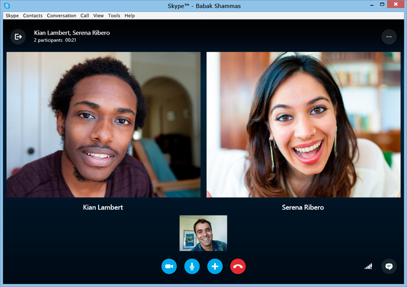

Il s'agit d'un moyen de pouvoir interagir avec des personnes en mettant en relation le visuel et le sonore.
Ceci est pratique pour les interactions à distance.
L'un des logiciels parmis les plus connus et les plus utilisés doit être Skype.
Pour faire de la visioconférence il faut avoir certains pré-requis :
Il y a plusieurs types de visionconférences. On parle d'abord de la visionconférence depuis un logiciel ce qui est le plus courant. Mais ce qui se développe très vite en ce moment c'est les visioconférences depuis des sites Web.
Il y a de nombreux avantages à la visioconférence :
En contrepartie d'un outil util, il y a également des inconvénients tel que:
Voici les logiciels de visioconférence les plus utilisés :
Tout d'abord, voici Skype qui doit être l'outil le plus utilisé dans le monde. Son utilisation est très simple, il permet en plus de la visioconférence, d'envoyer des messages écris, l'envoi de fichiers..

Le concurrent principal de Skype est bien ooVoo qui a comme particularité que l'on peut laisser des messages vocaux si la personne ne répond pas.
On peut également synchroniser ooVoo avec nos contacts mail...
Il y enfin iVisit qui est un très bon logiciel de vidéoconférence qui permet de montrer des fichiers(Word,PDF..), pour que tous les participants voient simulaténement.
IL y a localisation possible oar le biais d'une visionneuse GPS intégré dans le logiciel.